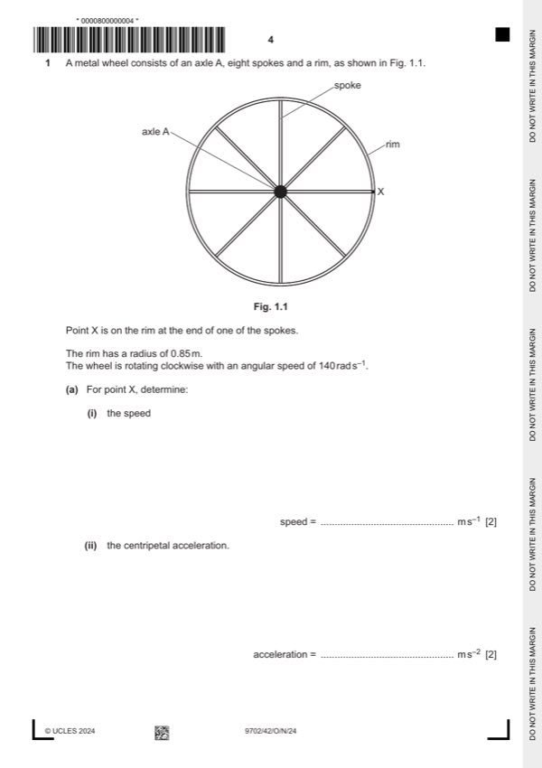

Question 1

Original paper page 4
Part 1(a)(i) — solution
- [A1] Obtain/use: = 0.85 140
Mark points
- [A1] Obtain/use: = 0.85 140
Part 1(a)(ii) — solution
- [A1] Obtain/use: a = 0.85 1402 or 1202 / 0.85
Mark points
- [A1] Obtain/use: a = 0.85 1402 or 1202 / 0.85
Part 1(b)(i) — solution
- [M1] Obtain/use: direction of (induced) e.m.f
- [A1] Obtain/use: is such as to (produce effects that) oppose the change that caused it
Mark points
- [M1] Obtain/use: direction of (induced) e.m.f
- [A1] Obtain/use: is such as to (produce effects that) oppose the change that caused it
Part 1(b)(ii) — solution
- [A1] Obtain/use: T = 2 /
Mark points
- [A1] Obtain/use: T = 2 /
Part 1(b)(iii) — solution
- [A1] Obtain/use: = 0.41 Wb
Mark points
- [A1] Obtain/use: = 0.41 Wb
Part 1(b)(iv) — solution
- [A1] Obtain/use: = 0.41 / 0.045
Mark points
- [A1] Obtain/use: = 0.41 / 0.045
Part 1(b)(v) — solution
- [B1] Obtain/use: force (on spoke) must be anticlockwise, so current is from A to X (by Fleming’s left hand rule), so X is at the higher potential
Mark points
- [B1] Obtain/use: force (on spoke) must be anticlockwise, so current is from A to X (by Fleming’s left hand rule), so X is at the higher potential